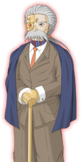
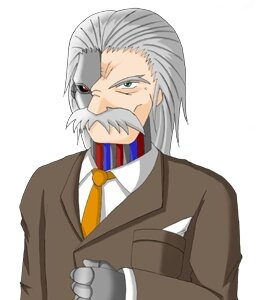

- Welcome to Touhou Wiki!
- Please register to edit. For assistance, check in with our Discord server or IRC channel.
Erich
| エーリッヒ Erich e̞ːɾihçi Ehrlich | |
|---|---|
|
 Erich in Banshiryuu
| |
| Species | |
| Age |
62 years old |
| Occupation |
Chairman of Cactus Company, Scientist |
| Location |
Seihou World (Earth) |
Music Themes | |
| |
Appearances | |
| Official Games | |
| |
- Note: This article is part of the Seihou Project by the Doujin circle "Shunsatsu sare do?".
Erich (エーリッヒ Ērihhi) is a 62-year-old scientist who is the chairman and founder of the Cactus Company, the company that discovered and perfected cactus energy. He has had many achievements, and is considerably well-known in the world of Seihou since he also discovered and developed RedStorm. However, his personality has just a little tendency to be eccentric. He was part of a disastrous accident 30 years ago caused by cactus energy, and due to this accident, he had to become a cyborg. His daughter Vivit also became captive in the "Other Dimension".
General Information[edit]
Erich first appeared as the fifth stage boss of Shuusou Gyoku, where after he appeared as a playable character in Kioh Gyoku. He then appeared in Banshiryuu as the first stage, and about 7 years later when Banshiryuu had C74 version release, he appeared as a support partner along VIVIT-r after stage 1.
Species[edit]
30 years ago, a disastrous accident happened caused by cactus energy. It appears due to this that Erich had major injury and had to become a cyborg. As he became a cyborg, in his Banshiryuu portrait, the right side of his face, his neck, and both his hands can be confirmed to have become machine. However, he's still officially a human.
Machinery[edit]
In Kioh Gyoku, he rode and fought in Hyberion, a close-range-fighting-oriented-type red humanoid robot. Regarding this, Milia said "so what's with the humanoid form?" The homing laser H.L.B (Homing Laser Bit) instantly kills the enemy through its AI killing.
In Banshiryuu, he piloted a high-performance mecha, known as the Hi-Beion line.
Character Basis[edit]
Name[edit]
"Erich" is a variant of Eric (which is Old Norse) and Frederick (which is Old German). The meaning of Erich is "forever or alone, ruler; peaceful ruler". Erich may sound like Erico or Erick. Other similar names that may also sound a lot like Erich may be Edrich, Erin, Rich, Arch, Erik, Errick, Erric, Emerich, Enoch, Errico, Eriq, Erie or even Eri.
Alternatively, Ehrlich is a German surname. He may be specifically named after scientist Paul Ehrlich, the German Nobel Laureate who co-invented the first effective drug for syphilis with Sahachiro Hata in 1909.
Design[edit]
Erich's design in Shuusou Gyoku shows that he has red eyes, grey hair and a grey moustache while wearing a blue suit, a white shirt, a red tie, and what appears to be a black jumper. The left side of his face is metal (coloured green) with an eye that looks same compared to the other eye, and judging from its appearance, he has a robotic neck.
His design has changed a little bit in Kioh Gyoku, where he wears a brown suit with a white shirt and a yellow tie (which he has a tissue in his suit pocket). It's confirmed that he indeed has a robotic neck and the metal part of his face has become silver, as well as containing a laser eye. It's also revealed that he has metal hands. Similar in Banshiryuu, he has a red tie, a walking stick and something blue over his arms (a coat?). He also has a band in his hair. The metal part of his face has once again changed to gold, as well as his hands.
It appears that the metal part of his face and hands turn colour from green (Shuusou Gyoku), to silver (Kioh Gyoku), and to gold (Banshiryuu), and its shape also more or less changes.
Story[edit]
- Shuusou Gyoku
- Main article: Shuusou Gyoku Story
Once, he researched cactus energy with his daughter Vivit, but due to an accident that occurred 30 years ago, her daughter became captive in the "Other Dimension". In order to bring his daughter back, he created VIVIT, and in order to test her ability, he sent assassin to attack her: Milia, Gates, Marie, Mei and Mai. VIVIT was initially brought forth with the intention of rescuing his daughter, but Erich who rescued his daughter by his own deed rode in a fighter aircraft and fought with VIVIT, and so he entrusted everything to VIVIT, who has defeated him.
- Kioh Gyoku
- Main article: Kioh Gyoku Story
<add here>
- Banshiryuu
- Main article: Banshiryuu Story
In Banshiryuu, he discovered RedStorm, researched it and developed it, but half a year later, the machines that were equipped with RedStorm suddenly went on a rampage. He was conceived that the original cause was probably VIVIT-r, who uniquely didn't go on a rampage, intended to destroy VIVIT-r. In the end, he wasn't able to destroy VIVIT-r and entrusted to the intention of VIVIT-r who was searching for the original cause. He followed VIVIT-r's every move as she goes on her quest.
Relationships[edit]
- Note: The following Vivit's shouldn't be confused with each other.
Vivit[edit]
Vivit is Erich's daughter. The full detail to their relationship is unknown, but 30 years ago, a disastrous accident caused by cactus energy got Vivit captive in what is known as the "Other Dimension" and was trapped in a machine. Erich created VIVIT based on Vivit to rescue her.
VIVIT[edit]
VIVIT is Erich's robotic maid and Erich is VIVIT's master and creation. VIVIT was created as a mirror image of his daughter, Vivit. VIVIT will do any form of errand her master gives her, even if it contains destroying spaceships. This shows that Erich has faith in VIVIT. In Shuusou Gyoku, VIVIT was attacked by five assassins, which were sent by Erich himself to test how powerful VIVIT is. After she defeated them, VIVIT found Erich and he attacked VIVIT, but he orders her to defeat him. When VIVIT defeats him, she asks the question "Are you OK?".
In Shuusou Gyoku's ending, she said she'll be "helping out my master in every matters," and always has contact with her master so he can see what's going off with certain errands. Every time Erich tells VIVIT off, such as "Watch your language!" VIVIT will start to feel sorry as she feels that she's upset her master.
VIVIT-r[edit]
As well to VIVIT, VIVIT-r is Erich's robotic maid and Erich is VIVIT-r's master and creation. In Banshiryuu, he believed that it was VIVIT-r who made the machines of RedStorm to go on a rampage (Who turned out to be Yuitia), so he decided to destroy VIVIT-r with everything he has, but he still gives the command for VIVIT-r to attack her own master. After VIVIT-r defeats him though, Erich had entrusted to the intention of VIVIT-r who was searching for the original cause, and gives her the task to go Mars to stop the chaos of RedStorm. Also, Erich appears to not like VIVIT-r playing with his personal stuff when he said "You dare to leave a scratch on my car!"
VIVIT-r will do anything to keep her master safe. She described that "creating me has been the dream of mankind" and "Me standing here is the culmination of the dream, sweat and blood of my master." When she completes an errand, she'll report every little detail on what happened to her master. Erich on some occasions will follow and help VIVIT-r with her errand and says such sayings such as "Move slowly through and graze enemy fire!!" "GET OUT OF RANGE FROM THE CANNON!" and "That shield is dangerous!".
Marie[edit]
Marie is Erich's subordinate. When Marie defeats Erich in Kioh Gyoku, there was no expression other than "Why...." and therefore (regularly, other than Yuuka Kazami, there are three expressions for each character), it can be guessed that there's something between him and Marie. However, when Erich defeats Marie, there has been no expression that seems to indicate this sort of relation, and like other characters, has three winning expressions prepared.
Minor Relationships[edit]
- Muse
There seems to be something with Muse and Erich. In Kioh Gyoku, Erich gives three expressions when he wins to Muse, which are; "Forgive me. This is also for the sake of my dream," "Muse. I am truly sorry" and "You, of all people... are whom I did not wish to involve in this war." Muse also had the expression, "I do not wish to fight you."
- Milia
Milia is simply a hired hand to Erich.
- Lagunas and Yuitia
Erich appears to know Lagunas and Yuitia appears to know Erich, but this is unknown. On lunatic mode of C74 version of Banshiryuu, Erich says "Long time no see, Lagunas" as well as "You haven't changed at all..." On the same mode, Yuitia says "Oh, it's old man Erich."
Additional Information[edit]
- He has his own private army that is more advanced than any other military force in the solar system, even Mars' military.
- He's hinted by the omake texts to be a little bit of a pervert.
Fandom[edit]
Official Profiles[edit]
|  | ◆ エーリッヒ ◆
・３０年前の事故以来、娘を助けるために頑張るじいさん、６２歳。
☆ 特徴 ☆ |
◆ Erich ◆
・A 62-year-old elderly who has been trying hard to rescue his daughter ever since an accident that happened 30 years ago. ☆ Aircraft name ☆ ☆ Characteristics ☆ |
| くろまく。今回もわるいはかせ。 | The mastermind. Once again, he's an evil scientist. |
Official Sources[edit]
- 2000/12/30 Shuusou Gyoku
- 2001/12/30 Kioh Gyoku
- 2008/08/16 Banshiryuu
| This page is part of Project Characters, a Touhou Wiki project that aims to write proper descriptions for all official characters of Touhou Project. Please keep the character page guidelines in mind when contributing. |